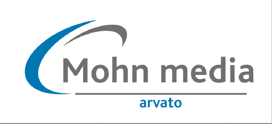
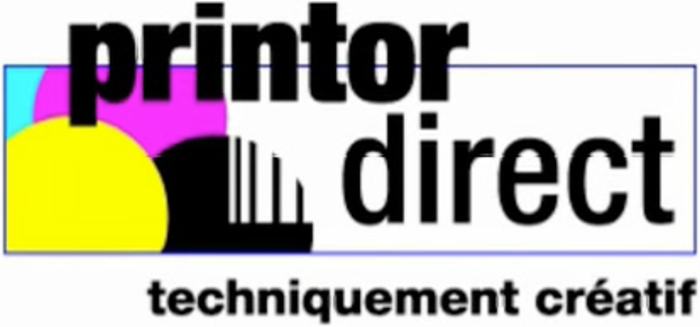
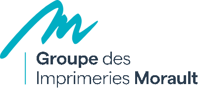
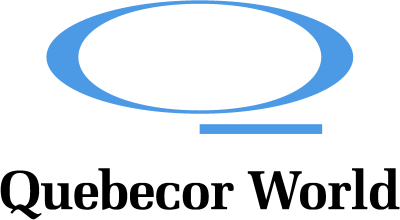

Dirigeant expérimenté en recherche d’un poste de direction générale (DGA, Directeur de Business Unit, Directeur d’Unité de production ou Directeur des Opérations) dans une PME ou ETI industrielle en région lyonnaise.
Portfolio préparé dans le cadre de l’atelier Acculturation IA (Simplon, 27 octobre 2026). Aucune information fictive : seules des données réelles issues de mon parcours professionnel.
Parcours professionnel
GUTENBERG NETWORKS (Groupe OMNICOM/DDB)
octobre 2021 – février 2026
Directeur Business Unit Print Management Multi-sites
Saint-Étienne, Boulogne, Lille
Diriger la BU : membre de la Direction des Opérations Métiers, rattaché au Directeur Général (devenu PDG du groupe) ; responsabilité des recrutements de la BU. Co-construction des axes stratégiques de la Direction des Opérations Métiers — socle des orientations du groupe — puis déclinaison en feuille de route de la BU.
Piloter la performance : pilotage de la rentabilité opérationnelle de la BU sur 107 M€ de chiffre d’affaires — optimisation de l’organisation, redéploiement et polyvalence des compétences, maîtrise de la masse salariale (-19 %), marge commerciale après coûts directs portée à 58,8 % (+2,3 pts vs budget) malgré la baisse des volumes.
Manager et fédérer : direction de 36 ETP répartis en 4 pôles clients et Logistique/Transport, via l’accompagnement de 4 cadres promus au management opérationnel.
Conduire la transformation : conception et déploiement d’une organisation en 4 pôles clients transverses (au lieu d’équipes cloisonnées par site), présents sur les 3 sites. Harmonisation des méthodes de travail et des indicateurs de pilotage (KPI) au service de la transversalité et de l’agilité.
Piloter le dialogue social : participation active à la pacification des relations sociales dans un contexte historiquement complexe. Modernisation de l’organisation du travail par la co-construction et la signature de plusieurs accords d’entreprise clés.
Développer l’activité : supervision des relations commerciales et techniques de 58 comptes clés (Auchan, Casino, Stellantis…), en synergie avec les directions de clientèle. Soutien stratégique aux équipes commerciales sur les chiffrages complexes, co-animation des soutenances d’appels d’offres (fidélisation et conquête) et des comités de pilotage.
Superviser la chaîne de valeur : 100 M€ d’achats annuels et 250 fournisseurs actifs. Déploiement de la politique RSE (Ecovadis Gold, éco-conception, bilan carbone).
GUTENBERG NETWORKS (Groupe OMNICOM/DDB)
avril 2011 – octobre 2021
Directeur de Production Print
Saint-Étienne
Piloter des flux massifs : direction opérationnelle de la production et de la livraison hebdomadaire de 15 à 20 millions de prospectus pour le Groupe Casino, sur 150 points de livraison.
Maîtriser la qualité et les litiges : responsabilité des réclamations et litiges liés à la production et à la livraison, traités auprès des fournisseurs pour le compte des donneurs d’ordre. Réduction des litiges supportés par l’agence de 150 k€ à 15 k€ par an après la prise de fonction.
Optimiser la supply chain européenne : coordination des flux de production industriels auprès de fournisseurs répartis sur 8 pays (France, Benelux, Allemagne, Italie, Espagne, Royaume-Uni).
Gérer les achats : 80 M€ de volumes annuels (impression, papier, logistique).
Accompagner le développement commercial : chiffrage des plans d’action commerciaux, préconisations techniques et budgétaires, présentation aux clients et participation active aux comités de pilotage.
Manager et développer les compétences : encadrement de 4 collaborateurs et montée en compétences techniques.
La création d'un prospectus, du brief à la livraison
Cette vidéo illustre la réalisation d'un prospectus : brief client, chiffrage, impression et livraison. J'y interviens sur le chiffrage pour les clients puis sur la production.




MOHN MEDIA · PRINTOR DIRECT · GROUPE MORAULT · QUEBECOR WORLD
2002 – 2011
Technico-commercial B2B Grands Comptes
Région Parisienne
Développement et gestion de portefeuilles industriels dans l’imprimerie de labeur et de flux.
Chiffrage industriel, faisabilité technique, gestion des devis.
Lancement de dossiers de fabrication.
QUEBECOR WORLD
1999 – 2001
Deviseur - Gestionnaire d’affaires
Strasbourg
Chiffrage industriel et faisabilité technique.
Gestion des devis et lancement des dossiers de fabrication.
Compétences
Pilotage de P&L et trajectoire budgétaire
Management d’équipe multi-site et fédération
Stratégie commerciale B2B et relations grands comptes